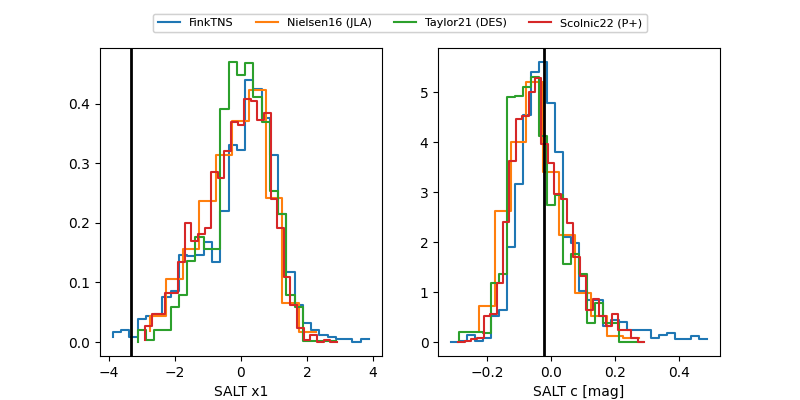

FINK: ZTF25abplacd
Lasair: ZTF25abplacd
ALeRCE: ZTF25abplacd
TNS: 2025xmb
YSE: 2025xmb
ZTF25abplacd (ztf,fink)
2025xmb (tns,yse)
ATLAS25lin (atlas)
equatorial (ra, dec) = (307.5442,+22.26764)
galactic (l, b) = (64.3425,-9.85611)

last atlasc=19.32, atlaso=19.21, ztfg=19.48, ztfr=19.31
4 atlasc, 1 atlaso, 4 ztfg, 2 ztfr detections